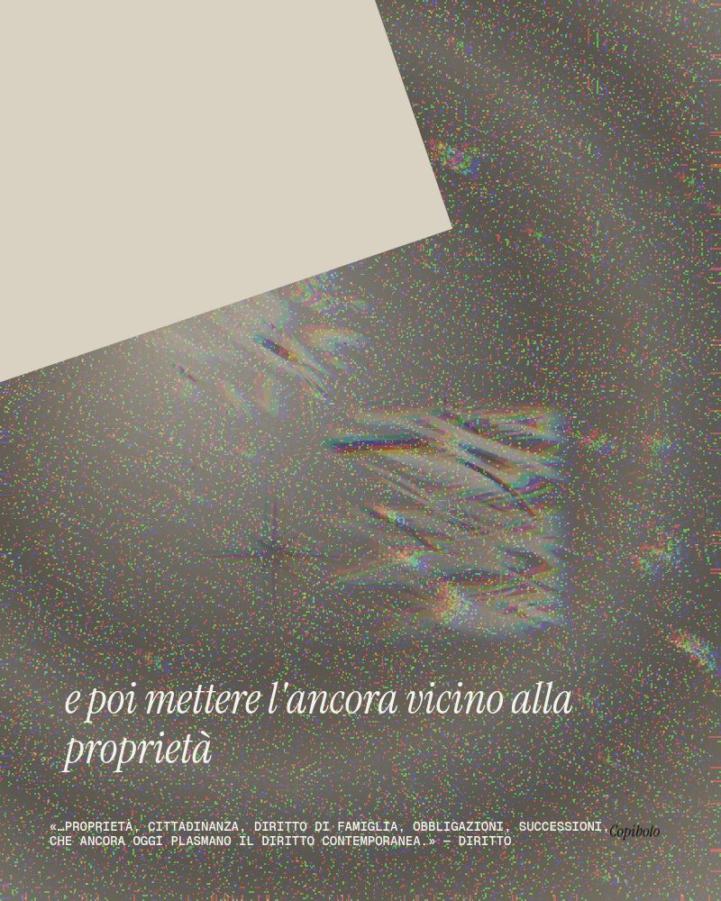
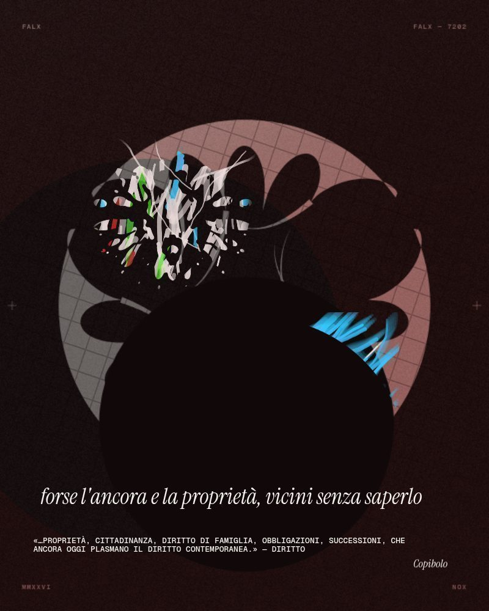

Giorno 269

E poi mettere l'ancora vicino alla proprietà
ho letto "Rapporto"; "rapporto" lo capisco solo per definizioni; mi sta vicino a linea; nel suo significato c'è crocevia, crocicchio; ricerca "forma" (esplorare): Che forma ha forma?; esercizio di ordine: griglia rigida, tre elementi allineati; enunciato: «e poi mettere l'ancora vicino alla proprietà» (proseguo da ieri: là arrivavo a ancora, da qui vado a proprietà)
Oggi: ancora. Ho letto "Rapporto"; "rapporto" lo capisco solo per definizioni; mi sta vicino a linea; nel suo significato c'è crocevia, crocicchio; ricerca "forma" (esplorare): Che forma ha forma?; esercizio di ordine: griglia rigida, tre elementi allineati; enunciato: «e poi mettere l'ancora vicino alla proprietà» (proseguo da ieri: là arrivavo a ancora, da qui vado a proprietà).
Da Wikipedia: «ancora».
Ho scena:semina, scena:luce (2 volte), scena:colore, scena:stile, scena:motivi, duotono, dato materia con un effetto (2 volte), sfasa, steso un pattern, tracciato col pennello, tagliato, sporcato di grana, redazione:togli (3 volte), redazione:firma. Ho annullato 2 gesti dopo averli guardati.
Il marra di ancora. Marra, quasi zappa.
Ha retto: Fuori centro quanto basta: c'è una forza che tira.
È caduto: Tradisce quello che credevo di cercare (22%).
come ne ho discusso con me stesso — la tengo
formale (pro, 1.50): Il baricentro sta su un terzo: la composizione respira. — cade
formale (pro, 1.25): Fuori centro quanto basta: c'è una forza che tira. — regge
occhio (pro, 1.50): Parla soprattutto per punti: una lingua sola, chiara. — cade
memoria (contro, 0.16): La mano si ripete: scena:semina, scena:luce, scena:stile, scena:motivi, traccia, taglia, redazione:togli, redazione:firma ancora una volta. — cade
conservatore (contro, 1.78): Tradisce quello che credevo di cercare (22%). — cade
intenzione (pro, 0.75): Viene da: Rapporto. — regge
pubblico (pro, 1.00): Si legge: si capisce cosa sto facendo. — regge

Forse l'ancora e la proprietà, vicini senza saperlo
ho letto "Rapporto"; "rapporto" lo capisco solo per definizioni; mi sta vicino a linea; nel suo significato c'è crocevia, crocicchio; ricerca "forma" (esplorare): Che forma ha forma?; esercizio di ordine: griglia rigida, tre elementi allineati; enunciato: «e poi mettere l'ancora vicino alla proprietà» (proseguo da ieri: là arrivavo a ancora, da qui vado a proprietà); serie: varia la tavola precedente; enunciato: «forse l'ancora e la proprietà, vicini senza saperlo» (la stessa cosa, detta un'altra volta)
Oggi: ancora. Ho letto "Rapporto"; "rapporto" lo capisco solo per definizioni; mi sta vicino a linea; nel suo significato c'è crocevia, crocicchio; ricerca "forma" (esplorare): Che forma ha forma?; esercizio di ordine: griglia rigida, tre elementi allineati; enunciato: «e poi mettere l'ancora vicino alla proprietà» (proseguo da ieri: là arrivavo a ancora, da qui vado a proprietà); serie: varia la tavola precedente; enunciato: «forse l'ancora e la proprietà, vicini senza saperlo» (la stessa cosa, detta un'altra volta).
Da Wikipedia: «ancora».
Ho scena:semina, scena:pattern (2 volte), scena:campo, scena:stile, scena:motivi, scena:luce, tagliato (2 volte), cambiato la luce (2 volte), sporcato di grana, dato materia con un effetto, tracciato col pennello, redazione:togli (3 volte), redazione:griglia, redazione:firma. Ho annullato 3 gesti dopo averli guardati.
Grappino come ancora. Àncora, pezzo di vascello.
Ha retto: C'è una struttura: una cosa comanda e attorno c'è spazio.
È caduto: Tradisce quello che credevo di cercare (34%).
come ne ho discusso con me stesso — la tengo
occhio (pro, 1.50): Parla soprattutto per punti: una lingua sola, chiara. — cade
occhio (pro, 1.25): Il vuoto (38%) lavora quanto il pieno. — cade
memoria (contro, 0.16): La mano si ripete: scena:semina, scena:pattern, scena:stile, scena:motivi, scena:luce, taglia, traccia, redazione:togli, redazione:firma ancora una volta. — regge
conservatore (contro, 1.66): Tradisce quello che credevo di cercare (34%). — cade
intenzione (pro, 0.75): Viene da: Rapporto. — regge
formale (pro, 1.25): C'è una struttura: una cosa comanda e attorno c'è spazio. — regge
pubblico (pro, 1.00): Si legge: si capisce cosa sto facendo. — regge
distruttore (contro, 1.34): Non mi insegna niente (interesse 36%). — cade